Рентгеновский «скан» человека с экзоскелетом: стеклянная кожа, анатомический скелет, кровеносная система, по которой бежит пульс, экзоскелет, который разбирается и собирается обратно, и HUD поверх кадра. Всё в бесшовной петле на 5 секунд. Ниже — как это собиралось, шаг за шагом.
Готовый пайплайн в Houdini 21: скан тела Male Écorché, перестроенный через SDF в цельную «стеклянную» оболочку кожи (920 тыс. полигонов), скелет из анатомической базы BodyParts3D (567 тыс.), процедурный экзоскелет (56 тыс., 83 детали), риг KineFX на 25 суставов с микродвижением дыхания и HUD, собранный нодами прямо в плоскости камеры.
Первым делом — ревизия: 96 нод, которые ни во что не выходили (старая процедурная ветка скелета, первая версия экзоскелета, сырой импорт скана), удалены. Геометрия на выходе не изменилась ни на полигон.
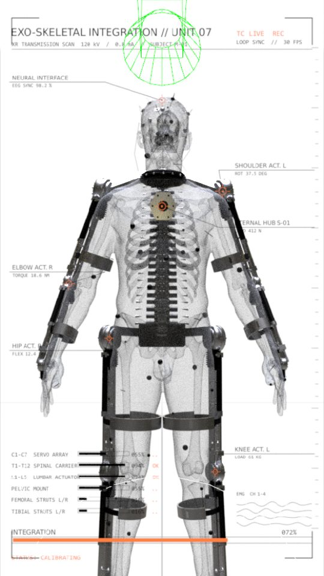
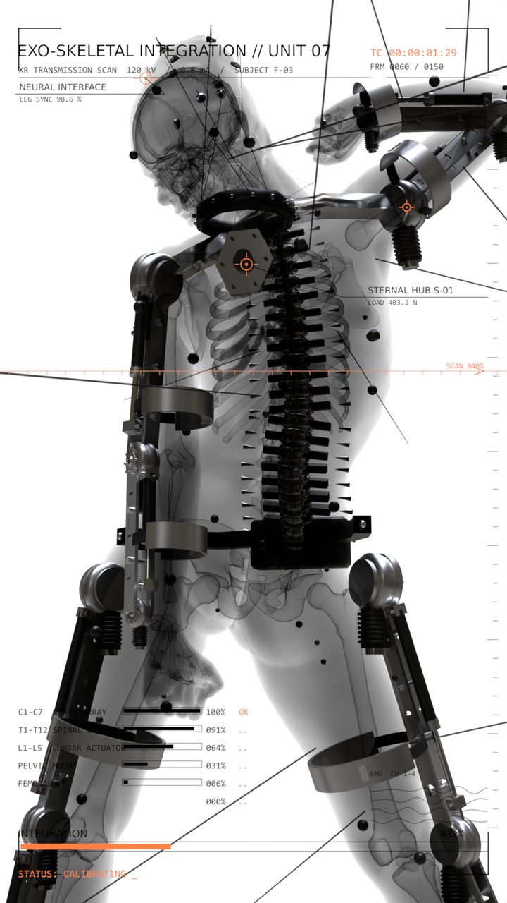
В запечённой модели скелета свод черепа был собран неправильно: лобная кость в масштабе ~0.35, теменные ~0.53, затылочная ~0.4, височные ~0.6, со сдвигами до 4 см. Лицо при этом стояло верно.
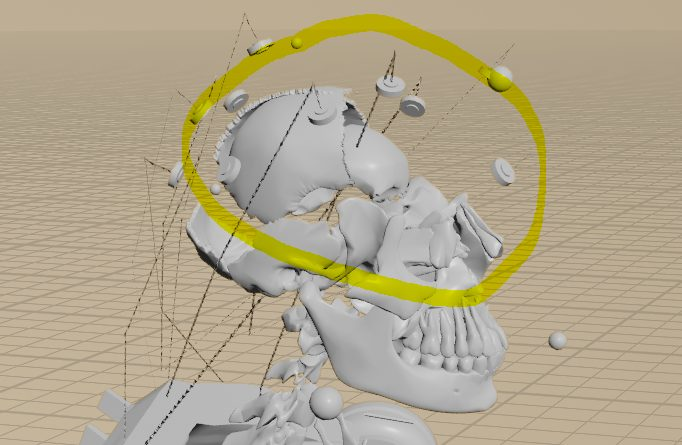
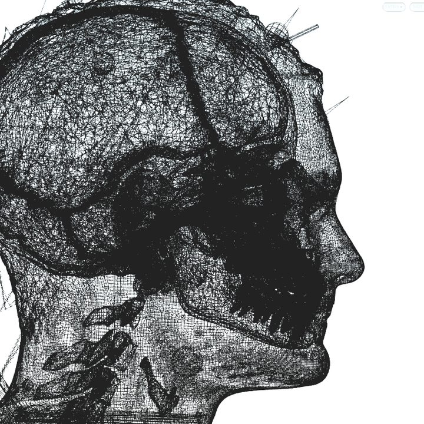
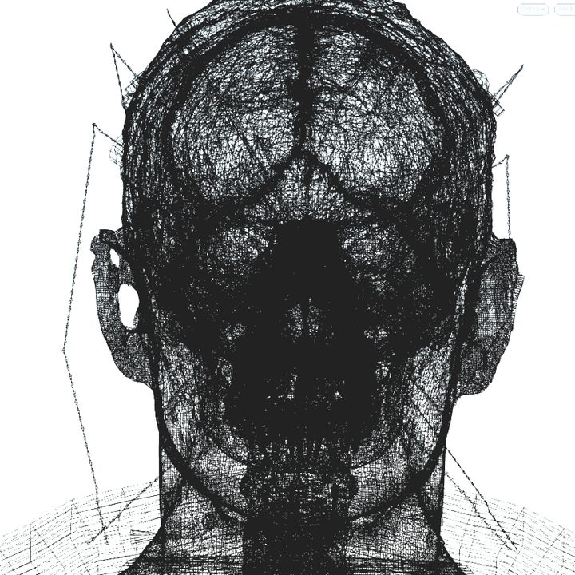
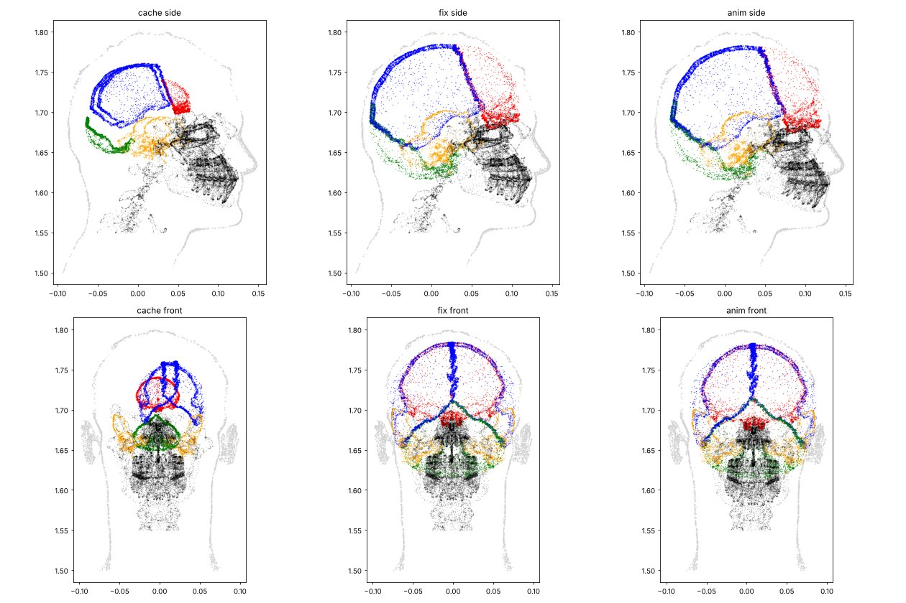
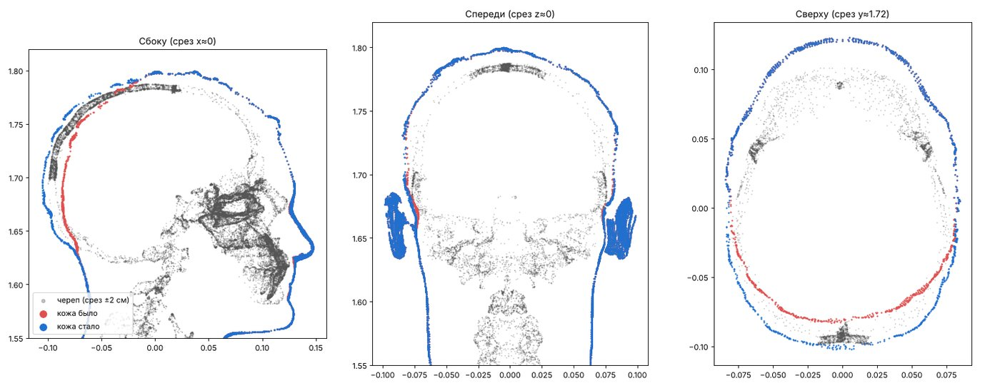
Сосудистое дерево выращено процедурно и полностью нативными нодами. Объём тела заполнен графом из ~31 тыс. точек; от сердца к ~1000 концевых точек у кожи проложены кратчайшие пути со штрафом за близость к коже. Поэтому главные стволы сами ложатся по осям туловища и конечностей — аорта, подвздошные, бедренные, сонные — а капилляры расходятся к поверхности.
Толщина нити = сколько путей через неё прошло: от 0,8 мм у капилляров до 6 мм у аорты. Материал — красный emission, нити светятся сквозь стеклянную кожу.
Пульс в петле. 5 ударов за 150 кадров (60 уд/мин). Каждый удар — вспышка в сердце и волна свечения, бегущая по длине сосуда к голове, рукам и ногам. Целое число ударов на петлю → кадр 151 совпадает с кадром 1 до последнего знака.
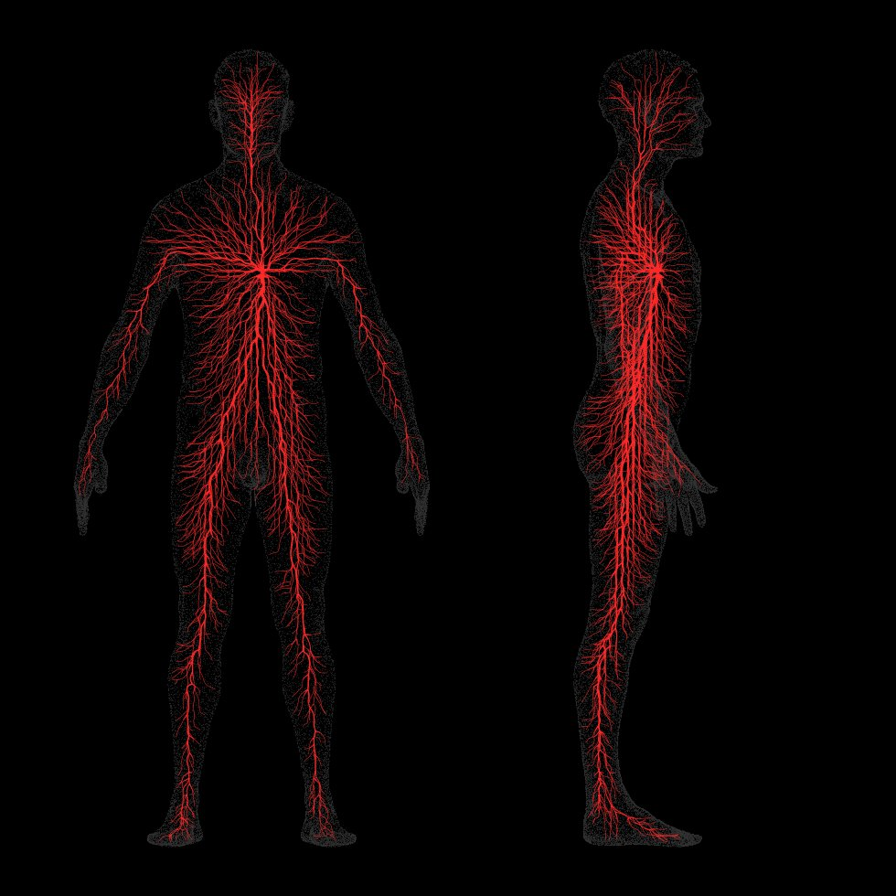
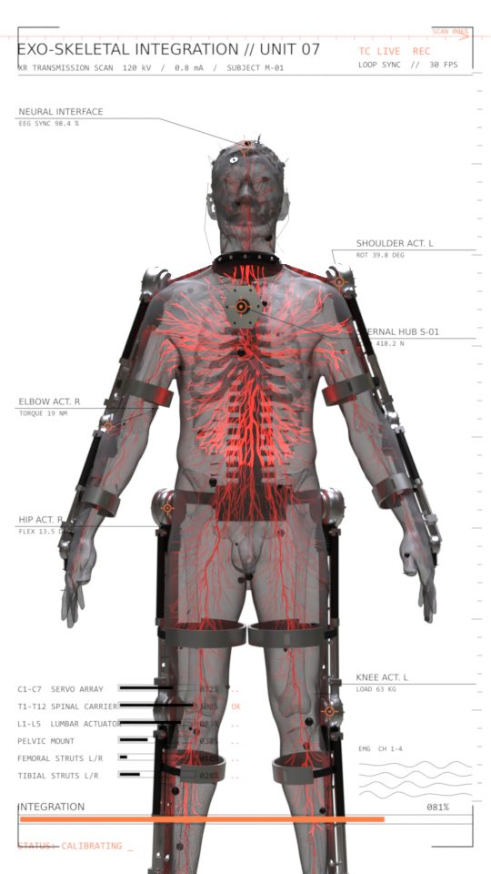
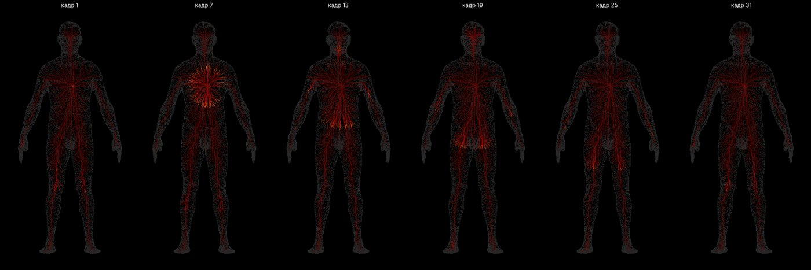
Камера. В первом и последнем кадре человек виден целиком — от макушки до стоп (14–91 % высоты кадра). К середине петли камера плавно наезжает до 2 м на торс.
Разборка. 55 из 83 деталей — актуаторы, поршни, кронштейны, манжеты, пластины, стойки, часть позвоночных модулей — отходят от тела по радиусу от ближайшей кости рига (до 11 см) с лёгким поворотом. Ease in-out, разнос старта по деталям, пик на кадре 75. Ошейник, тазовый блок, провода, электроды и иглы остаются на месте.
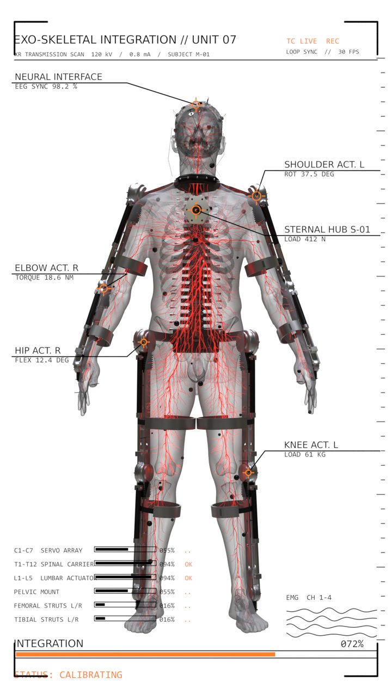
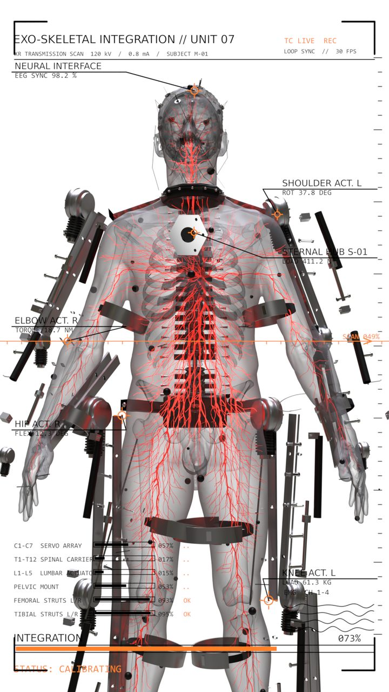
Исходный HUD — мелкие шрифты 16–19 px и чёрный текст без подложки поверх полупрозрачного тела. В CONTROLS появилась папка «HUD style»: жирный шрифт, масштаб текста, толщина линий, тёмные подложки под блоками. Три варианта на самом нагруженном кадре 75:
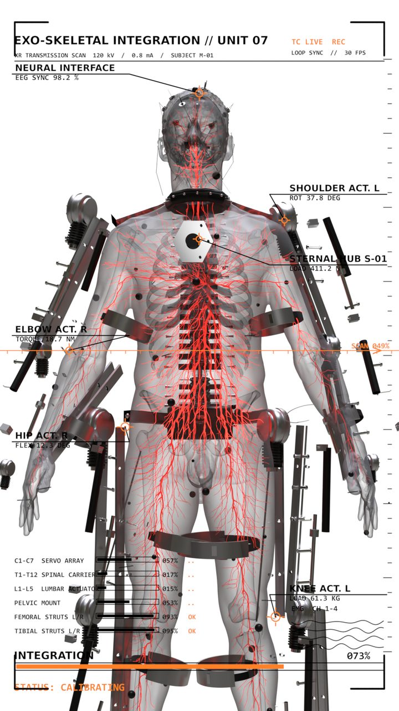
Рендер из Solaris через Karma XPU в фоне — Houdini остаётся свободным. Петля бесшовная: камера, дыхание рига, пульс и разборка завязаны на одну длину 150 кадров.
| Софт | Houdini 21.0 · Solaris · Karma XPU · MaterialX |
| Формат | 1080×1920, 30 fps, 150 кадров (петля 5 с) |
| Сэмплинг | 64 spp + денойзер OIDN |
| Время | ~21 с на кадр, ~55 мин на секвенцию |
| Тело | 3D-скан, SDF-ремеш, стеклянная кожа · 920 тыс. полигонов |
| Скелет | BodyParts3D · 567 тыс. полигонов · свод черепа восстановлен |
| Сосуды | 1745 кривых, 0,8–6 мм, emission + пульс 60 уд/мин |
| Экзоскелет | процедурный, 83 детали, разборка 55 деталей |
| Риг | KineFX, 25 суставов, bone deform на всё |
| HUD | ноды в плоскости камеры, вариант A (тонкий шрифт, ×1,3) |